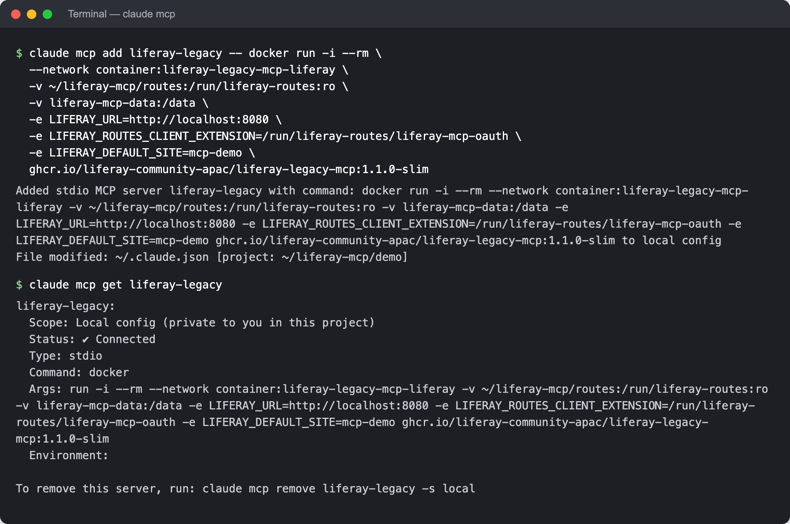
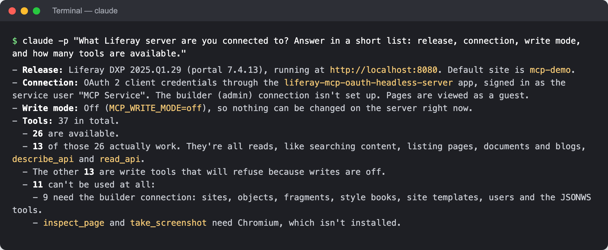
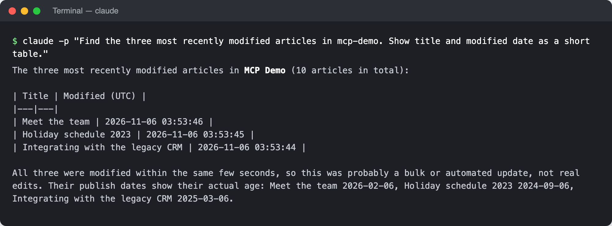

With Claude Code
Claude Code adds MCP servers with one command, claude mcp add, and starts them itself, so each person runs their own copy of the server on their computer.
You need Docker, Claude Code, and a copy of the server’s credentials on your computer, as in the page for where your Liferay runs (Tomcat, Docker, PaaS), readable only by you.
- Step 1: Add the Server
- Step 2: Check That It Connects
- Step 3: Ask
- Step 4: Turn On Writes (Optional)
- Related Information
Step 1: Add the Server
Run this once, with your Liferay’s address, your routes folder, and the site to work in by default:
claude mcp add liferay-legacy -- docker run -i --rm \
-v ~/liferay-mcp/routes:/run/liferay-routes:ro \
-v liferay-mcp-data:/data \
-e LIFERAY_URL=https://liferay.example.com \
-e LIFERAY_ROUTES_CLIENT_EXTENSION=/run/liferay-routes/liferay-mcp-oauth \
-e LIFERAY_DEFAULT_SITE=my-site \
ghcr.io/liferay-community-apac/liferay-legacy-mcp:1.1.0-slim
Everything after -- is the command Claude Code runs to start the server. ~/liferay-mcp/routes is the folder that holds the liferay-mcp-oauth folder.
liferay-legacy is the server’s name in Claude Code, and its tools are named after it, such as mcp__liferay-legacy__search_content. Keep it distinct from other Liferay connections: a server of the same name in another scope replaces this one. If you connect more than one Liferay, add one server for each, named after it, such as liferay-legacy-prod and liferay-legacy-test, so the assistant can tell which one it’s working on.
By default, the server is added for the current folder only, and only for you. Add -s user after add to use it in every folder. Add -s project instead to share it with your team in the folder’s .mcp.json: teammates then approve it the first time they start Claude Code there, and need their own routes folder. To use it in the Claude desktop app’s Code tab, see With the Claude Desktop App.
Step 2: Check That It Connects
claude mcp get liferay-legacy
It shows Status: ✔ Connected once Claude Code could start the server and list its tools. In a Claude Code session, /mcp shows the same.

These screenshots were taken against a test Liferay in a local Docker container named liferay-legacy-mcp-liferay, so the server joins that container’s network (--network container:…) and reaches Liferay at http://localhost:8080. Against your own Liferay, use its address, as in Step 1.
Step 3: Ask
Start Claude Code with claude, and ask “What Liferay server are you connected to?” Claude Code asks you to allow each Liferay tool the first time it uses it. The answer names your Liferay’s release, the connection, the write mode, and how many tools your Liferay supports:

Then ask about your content:

These were asked with claude -p, which runs one question and prints the answer; the same questions work in an interactive session.
Step 4: Turn On Writes (Optional)
Writes are off until the server runs with MCP_WRITE_MODE=confirm. Remove the server, and add it again with that setting before the image name:
claude mcp remove liferay-legacy
claude mcp add liferay-legacy -- docker run -i --rm \
-v ~/liferay-mcp/routes:/run/liferay-routes:ro \
-v liferay-mcp-data:/data \
-e LIFERAY_URL=https://liferay.example.com \
-e LIFERAY_ROUTES_CLIENT_EXTENSION=/run/liferay-routes/liferay-mcp-oauth \
-e LIFERAY_DEFAULT_SITE=my-site \
-e MCP_WRITE_MODE=confirm \
ghcr.io/liferay-community-apac/liferay-legacy-mcp:1.1.0-slim
Start a new Claude Code session afterwards.
Each write is then shown as a preview in Claude Code, and runs only once you confirm it. See Writes and Previews.